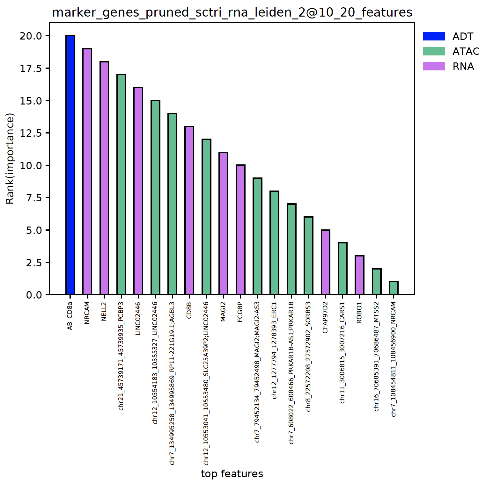

API¶
ScTriangulate Class Methods¶
- class sctriangulate.main_class.ScTriangulate(dir, adata, query, species='human', criterion=2, verbose=1, reference=None, add_metrics={'tfidf5': <function tf_idf5_for_cluster>}, predict_doublet=True)¶
How to create/instantiate ScTriangulate object.
- Parameters
dir – Output folder path on the disk
adata – input adata file
query – a python list contains the annotation names to query
Example:
adata = sc.read('pbmc3k_azimuth_umap.h5ad') sctri = ScTriangulate(dir='./output',adata=adata,query=['leiden1','leiden2','leiden3'])
(static) salvage_run()¶
- sctriangulate.main_class.ScTriangulate.salvage_run(step_to_start, last_step_file, compute_metrics_parallel=True, scale_sccaf=True, compute_shapley_parallel=True, win_fraction_cutoff=0.25, reassign_abs_thresh=10, assess_pruned=True, viewer_cluster=True, viewer_cluster_keys=None, viewer_heterogeneity=True, viewer_heterogeneity_keys=None)¶
This is a static method, which allows to user to resume running scTriangulate from certain point, instead of running from very beginning if the intermediate files are present and intact.
- Parameters
step_to_start – string, now support ‘assess_pruned’.
last_step_file – string, the path to the intermediate from which we start the salvage run.
Other parameters are the same as
lazy_runfunction.Examples:
ScTriangulate.salvage_run(step_to_start='assess_pruned',last_step_file='output/after_rank_pruning.p')
(statis) deserialize()¶
- sctriangulate.main_class.ScTriangulate.deserialize(name)¶
This is static method, to deserialize a pickle file on the disk back to the ram as a sctri object
- Parameters
name – string, the name of the pickle file on the disk.
Examples:
ScTriangulate.deserialize(name='after_rank_pruning.p')
add_new_metrics()¶
- sctriangulate.main_class.ScTriangulate.add_new_metrics(self, add_metrics)¶
Users can add new callable or pre-implemented function to the sctri.metrics attribute.
- Parameters
add_metrics – dictionary like {‘metric_name’: callable}, the callable can be a string of a scTriangulate pre-implemented function, for example, ‘tfidf5’,’tfidf1’. Or a callable.
Examples:
sctri.add_new_metrics(add_metrics={'tfidf1':tfidf1}) # make sure first from sctriangualte.metrics import tfidf1
add_to_invalid()¶
- sctriangulate.main_class.ScTriangulate.add_to_invalid(self, invalid)¶
add individual raw cluster names to the sctri.invalid attribute list.
- Parameters
invalid – list or string, contains the raw cluster names to add
Examples:
sctri.add_to_invalid(invalid=['annotation1@c3','annotation2@4']) sctri.add_to_invalid(invalid='annotation1@3')
add_to_invalid_by_win_fraction()¶
- sctriangulate.main_class.ScTriangulate.add_to_invalid_by_win_fraction(self, percent=0.25)¶
add individual raw cluster names to the sctri.invalid attribute list by win_fraction
- Parameters
percent – float, from 0-1, the fraction of cells within a cluster that were kept after the game. Default: 0.25
Examples:
sctri.add_to_invalid_by_win_fraction(percent=0.25)
clear_invalid()¶
- sctriangulate.main_class.ScTriangulate.clear_invalid(self)¶
reset/clear the sctri.invalid to an empty list
Examples:
sctri.clear_invalid()
compute_metrics()¶
- sctriangulate.main_class.ScTriangulate.compute_metrics(self, parallel=True, scale_sccaf=True)¶
main function for computing the metrics (defined by self.metrics) of each clusters in each annotation. After the run, q (# query) * m (# metrics) columns will be added to the adata.obs, the column like will be like {metric_name}@{query_annotation_name}, i.e. reassign@sctri_rna_leiden_1
- Parameters
parallel – boolean, whether to run in parallel. Since computing metrics for each query annotation is idependent, the program will automatically employ q (# query) cores under the hood. If you want to fully leverage this feature, please make sure you specify at least q (# query) cores when running the program. It is highly recommend to run this in parallel. However, when the dataset is super large and have > 10 query annotation, we may encounter RAM overhead, in this case, sequential mode will be needed. Default: True
scale_sccaf – boolean, when running SCCAF score, since it is a logistic regression problem at its core, this parameter controls whether scale the expression data or not. It is recommended to scale the data for any machine learning algorithm, however, the liblinaer solver has been demonstrated to be robust to the scale/unscale options. When the dataset > 50,000 cells or features > 1000000 (ATAC peaks), it is advised to not scale it for faster running time.
Examples:
sctri.compute_metrics(parallel=True,scale_sccaf=True)
compute_shapley()¶
- sctriangulate.main_class.ScTriangulate.compute_shapley(self, parallel=True)¶
Main core function, after obtaining the metrics for each cluster. For each single cell, let’s calculate the shapley value for each annotation and assign the cluster to the one with highest shapley value.
- Parameters
parallel – boolean. Whether to run it in parallel. (scatter and gather). Default: True
Examples:
sctri.compute_shapley(parallel=True)
confusion_to_df()¶
- sctriangulate.main_class.ScTriangulate.confusion_to_df(self, mode, key)¶
Print out the confusion matrix with cluster labels (dataframe).
- Parameters
mode – either ‘confusion_reassign’ or ‘confusion_sccaf’
mode – python string, for example, ‘annotation1’
Examples:
sctri.confusion_to_df(mode='confusion_reassign',key='annotation1')
display_hierarchy()¶
- sctriangulate.main_class.ScTriangulate.display_hierarchy(self, ref_col, query_col, save=True)¶
Display the hierarchy of suggestive sub-clusterings, see the example results down the page.
- Parameters
ref_col – string, the annotation/column name in adata.obs which we want to inspect how it can be sub-divided
query_col – string, either ‘raw’ or ‘pruned’
save – boolean, whether to save it to a file or stdout. Default: True
Examples:
sctri.display_hierarchy(ref_col='sctri_rna_leiden_1',query_col='raw')

doublet_predict()¶
- sctriangulate.main_class.ScTriangulate.doublet_predict(self)¶
wrapper function of running scrublet, will add a column on adata.obs called ‘doublet_scores’
Examples:
sctri.doublet_predict()
gene_to_df()¶
- sctriangulate.main_class.ScTriangulate.gene_to_df(self, mode, key, raw=False, col='purify', n=100)¶
Output {mode} genes for all clusters in one annotation (key), mode can be either ‘marker_genes’ or ‘exclusive_genes’.
- Parameters
mode – python string, either ‘marker_genes’ or ‘exclusive_genes’
key – python string, annotation name
raw – False will generate non-raw (human readable) format. Default: False
col – Only when mode==’marker_genes’, whether output ‘whole’ column or ‘purify’ column. Default: purify
n – Only when mode==’exclusive_genes’, how many top exclusively expressed genes will be printed for each cluster.
Examples:
sctri.gene_to_df(mode='marker_genes',key='annotation1') sctri.gene_to_df(mode='exclusive_genes',key='annotation1')
get_metrics_and_shapley()¶
- sctriangulate.main_class.ScTriangulate.get_metrics_and_shapley(self, barcode, save=True)¶
For one single cell, given barcode/or other unique index, generate the all conflicting cluster from each annotation, along with the metrics associated with each cluster, including shapley value.
- Parameters
barcode – string, the barcode for the cell you want to query.
save – save the returned dataframe to directory or not. Default: True
- Returns
DataFrame
Examples:
sctri.confusion_to_df(barcode='AAACCCACATCCAATG-1',save=True)

lazy_run()¶
- sctriangulate.main_class.ScTriangulate.lazy_run(self, compute_metrics_parallel=True, scale_sccaf=True, compute_shapley_parallel=True, win_fraction_cutoff=0.25, reassign_abs_thresh=10, assess_pruned=True, viewer_cluster=True, viewer_cluster_keys=None, viewer_heterogeneity=True, viewer_heterogeneity_keys=None)¶
This is the highest level wrapper function for running every step in one goal.
- Parameters
compute_metrics_parallel – boolean, whether to parallelize
compute_metricsstep. Default: Truescale_sccaf – boolean, whether to first scale the expression matrix before running sccaf score. Default: True
compute_shapley_parallel – boolean, whether to parallelize
compute_parallelstep. Default: Truewin_fraction_cutoff – float, between 0-1, the cutoff for function
add_invalid_by_win_fraction. Default: 0.25reassign_abs_thresh – int, the cutoff for minimum number of cells a valid cluster should haves. Default: 10
assess_pruned – boolean, whether to run same cluster assessment metrics on final pruned cluster labels. Default: True
viewer_cluster – boolean, whether to build viewer html page for all clusters’ diagnostic information. Default: True
viewer_cluster_keys – list, clusters from what annotations we want to view on the viewer, only clusters within this annotation whose diagnostic plot will be generated under the dir name figure4viewer. Default: None, means all annotations in the sctri.query will be used.
viewer_heterogeneity – boolean, whether to build the viewer to show the heterogeneity based on one reference annotation. Default: True
viewer_heterogeneity_keys – list, the annotations we want to serve as the reference. Default: None, means the first annotation in sctri.query will be used as the reference.
Examples:
sctri.lazy_run(viewer_heterogeneity_keys=['annotation1','annotation2'])
modality_contributions()¶
- sctriangulate.main_class.ScTriangulate.modality_contributions(self, mode='marker_genes', key='pruned', tops=20, regex_adt='^AB_', regex_atac='^chr\\d{1,2}')¶
calculate teh modality contributions for multi modal analysis, the modality contributions of each modality of each cluster means the number of features from this modality that made into the top {tops} feature list. Three columns will be added to obs, they are
adt_contribution
atac_contribution
rna_contribution
- Parameters
mode – string, either ‘marker_genes’ or ‘exclusive_genes’.
key – string, any valid categorical column in self.adata.obs
tops – int, the top n features to consider for each cluster.
regex_adt – raw string, the pattern by which the ADT feature will be defined.
regex_atac – raw string ,the pattern by which the atac feature will be defined.
Examples:
sctri.modality_contributions(mode='marker_genes',key='pruned',tops=20)
penalize_artifact()¶
- sctriangulate.main_class.ScTriangulate.penalize_artifact(self, mode, stamps=None, parallel=True)¶
An optional step after running
compute_metricsstep and before thecompute_shapleystep. Basically, we penalize clusters with certain properties by set all their metrics to zero, which forbid them to win in the following “game” step. These undesirable properties can be versatial, for example, cellcylce gene enrichment. We current support two mode:mode1:
void, users specifiy which cluster they want to penalize viastampsparameter.mode2:
cellcycle, program automatically label clusters whose gsea_hit > 5 and gsea_score > 0.8 as invalid cellcyle enriched clusters. And those clusters will be penalized.
- Parameters
mode – string, either ‘void’ or ‘cellcycle’.
stamps – list, contains cluster names that the users want to penalize.
parallel – boolean, whether to run this in parallel (scatter and gather). Default: True.
Examples:
sctri.penalize_artifact(mode='void',stamps=['sctri_rna_leiden_1@c3','sctri_rna_leiden_2@c5']) sctri.penalize_artifact(mode='cellcyle')
plot_clusterability()¶
- sctriangulate.main_class.ScTriangulate.plot_clusterability(self, key, col, fontsize=3, plot=True, save=True)¶
We define clusterability as the number of sub-clusters the program finds out. If a cluster has being suggested to be divided into three smaller clusters, then the clueterability of this cluster will be 3.
- Parameters
key – string. The clusters from which annotation that you want to assess clusterability.
col – string. Either ‘raw’ cluster or ‘pruned’ cluster.
fontsize – int. The fontsize of x-ticklabels. Default: 3
plot – boolean. Whether to plot the scatterplot or not. Default : True.
save – boolean. Whether to save the plot or not. Default: True
- Returns
python dictionary. {cluster1:#sub-clusters}
Examples:
sctri.plot_clusterability(key='sctri_rna_leiden_1',col='raw',fontsize=8)

plot_cluster_feature()¶
- sctriangulate.main_class.ScTriangulate.plot_cluster_feature(self, key, cluster, feature, enrichment_type='enrichr', save=True, format='pdf')¶
plot the feature of each single clusters, including:
enrichment of artifact genes
marker genes umap
exclusive genes umap
location of clutser umap
- Parameters
key – string. Name of the annation.
cluster – string. Name of the cluster in the annotation.
feature – string, valid value: ‘enrichment’,’marker_genes’, ‘exclusive_genes’, ‘location’
enrichmen_type – string, either ‘enrichr’ or ‘gsea’.
save – boolean, whether to save the figure.
format – string, which format for the saved figure.
Example:
sctri.plot_cluster_feature(key='sctri_rna_leiden_1',cluster='3',feature='enrichment')

Example:
sctri.plot_cluster_feature(key='sctri_rna_leiden_1',cluster='3',feature='marker_genes')

Example:
sctri.plot_cluster_feature(key='sctri_rna_leiden_1',cluster='3',feature='location')

plot_confusion()¶
- sctriangulate.main_class.ScTriangulate.plot_confusion(self, name, key, save=True, format='pdf', cmap=<matplotlib.colors.LinearSegmentedColormap object>, **kwargs)¶
plot the confusion as a heatmap.
- Parameters
name – string, either ‘confusion_reassign’ or ‘confusion_sccaf’.
key – string, a annotation name which we want to assess the confusion matrix of the clusters.
save – boolean, whether to save the figure. Default: True.
format – boolean, file format to save. Default: ‘.pdf’.
cmap – colormap object, Default: scphere_cmap, which defined in colors module.
kwargs – additional keyword arguments to sns.heatmap().
Examples:
sctri.plot_confusion(name='confusion_reassign',key='sctri_rna_leiden_1')

plot_heterogeneity()¶
- sctriangulate.main_class.ScTriangulate.plot_heterogeneity(self, key, cluster, style, col='pruned', save=True, format='pdf', genes=None, umap_zoom_out=True, umap_dot_size=None, subset=None, marker_gene_dict=None, jitter=True, rotation=60, single_gene=None, dual_gene=None, multi_gene=None, merge=None, to_sinto=False, to_samtools=False, cmap='YlOrRd', **kwarg)¶
Core plotting function in scTriangulate.
- Parameters
key – string, the name of the annotation.
cluster – string, the name of the cluster.
stype –
string, valid values are as below:
umap: plot the umap of this cluster (including its location and its suggestive heterogeneity)
heatmap: plot the heatmap of the differentially expressed features across all sub-populations within this cluster.
build: plot both the umap and heatmap, benefit is the column and raw colorbar of the heatmap is consistent with the umap color
heatmap_custom_gene, plot the heatmap, but with user-defined gene dictionary.
heatmap+umap, it is the umap + heatmap_custom_gene, and the colorbars are matching
violin: plot the violin plot of the specified genes across sub populations.
single_gene: plot the gradient of single genes across the cluster.
dual_gene: plot the dual-gene plot of two genes across the cluster, usually these two genes should correspond to the marker genes in two of the sub-populations.
multi_gene: plot the multi-gene plot of multiple genes across the cluster.
cellxgene: output the h5ad object which are readily transferrable to cellxgene. It also support atac pseudobuld analysis with
to_sintoorto_samtoolsarguments.sankey: plot the sankey plot showing fraction/percentage of cells that flow into each sub population
col – string, either ‘raw’ or ‘pruned’.
save – boolean, whether to save or not.
foramt – string, which format to save.
genes – list, for violin plot.
umap_zoom_out – boolean, for the umap, whether to zoom out meaning the scale is the same of the whole umap. Zoom in means an amplified version of this cluster.
umap_dot_size – int/float, for the umap.
subset – list, the sub populations we want to keep for plotting.
marker_gene_dict – dict. The custom genes we want the heatmap to display.
jitter – float, for the violin plot.
rotation – int/float, for the violin plot. rotation of the text. Default: 60
single_gene – string, the gene name for single gene plot
dual_gene – list, the dual genes for dual gene plot.
multi_genes – list, the multiple genes for multi gene plot.
merge – nested list, the sub-populations that we want to merge. [(‘sub-c1’,’sub-c2’),(‘sub-c3’,’sub-c4’)]
to_sinto – boolean, for cellxgene mode, output the txt files for running sinto to generate pseudobulk bam files.
to_samtools – boolean,for cellxgene mode, output the txt files for running samtools to generate the pseudobulk bam files.
Example:
sctri.plot_heterogeneity('leiden1','0','umap',subset=['leiden1@0','leiden3@10']) sctri.plot_heterogeneity('leiden1','0','heatmap',subset=['leiden1@0','leiden3@10']) sctri.plot_heterogeneity('leiden1','0','violin',subset=['leiden1@0','leiden3@10'],genes=['MAPK14','ANXA1']) sctri.plot_heterogeneity('leiden1','0','sankey') sctri.plot_heterogeneity('leiden1','0','cellxgene') sctri.plot_heterogeneity('leiden1','0','heatmap+umap',subset=['leiden1@0','leiden3@10'],marker_gene_dict=marker_gene_dict) sctri.plot_heterogeneity('leiden1','0','dual_gene',dual_gene=['MAPK14','CD52'])
plot_long_heatmap()¶
- sctriangulate.main_class.ScTriangulate.plot_long_heatmap(self, clusters=None, key='pruned', n_features=5, mode='marker_genes', cmap='viridis', save=True, format='pdf', figsize=(6, 4.8), feature_fontsize=3, cluster_fontsize=5)¶
the default scanpy heatmap is not able to support the display of arbitrary number of marker genes for each clusters, the max feature is 50. this heatmap allows you to specify as many marker genes for each cluster as possible, and the gene name will all the displayed.
- Parameters
clusters – list, what clusters we want to consider under a certain annotation.
key – string, annotation name.
n_features – int, the number of features to display.
mode – string, either ‘marker_genes’ or ‘exclusive_genes’.
cmap – string, matplotlib cmap string.
save – boolean, whether to save or not.
format – string, which format to save.
figsize – tuple, the width and the height of the plot.
feature_fontsize – int/float. the fontsize for the feature.
cluster_fontsize – int/float, the fontsize for the cluster.
Examples:
sctri.plot_long_umap(n_features=20,figsize=(20,20))

plot_multi_modal_feature_rank()¶
- sctriangulate.main_class.ScTriangulate.plot_multi_modal_feature_rank(self, cluster, mode='marker_genes', key='pruned', tops=20, regex_adt='^AB_', regex_atac='^chr\\d{1,2}', save=True, format='.pdf')¶
plot the top features in each clusters, the features are colored by the modality and ranked by the importance.
- Parameters
cluster – string, the name of the cluster.
mode – string, either ‘marker_genes’ or ‘exclusive_genes’
tops – int, top n features to plot.
regex_adt – raw string, the pattern by which the ADT feature will be defined.
regex_atac – raw string ,the pattern by which the atac feature will be defined.
save – boolean, whether to save the figures.
format – string, the format the figure will be saved.
Examples:
sctri.plot_multi_modal_feature_rank(cluster='sctri_rna_leiden_2@10')
plot_umap()¶
- sctriangulate.main_class.ScTriangulate.plot_umap(self, col, kind='category', save=True, format='pdf', umap_dot_size=None, umap_cmap='YlOrRd', frameon=False)¶
plotting the umap with either category cluster label or continous metrics are important. Different from the scanpy vanilla plot function, this function automatically generate two umap, one with legend on side and another with legend on data, which usually will be very helpful imagine you have > 40 clusters. Secondly, we automatically make all the background dot as light grey, instead of dark color.
- Parameters
col – string, which column in self.adata.obs that we want to plot umap from.
kind – string, either ‘category’ or ‘continuous’
save – boolean, whether to save it to disk or not. Default: True
format – string. Which format to save. Default: ‘.pdf’
umap_dot_size – int/float. the size of dot in scatter plot, if None, using scanpy formula, 120000/n_cells
umap_cmap – string, the matplotlib colormap to use. Default: ‘YlOrRd’
frameon – boolean, whether to have the frame on the umap. Default: False
Examples:
sctri.plot_umap(col='pruned',kind='category') sctri.plot_umap(col='confidence',kind='continous')


plot_winners_statistics()¶
- sctriangulate.main_class.ScTriangulate.plot_winners_statistics(self, col, fontsize=3, plot=True, save=True)¶
For triangulated clusters, either ‘raw’ or ‘pruned’, visualize what fraction of cells won the game. A horizontal barplot will be generated and a dataframe with winners statistics will be returned.
- Parameters
col – string, either ‘raw’ or ‘pruned’
fontsize – int, the fontsize for the y-label. Default: 3
plot – boolean, whether to plot or not. Default: True
save – boolean, whether to save the plot to the sctri.dir or not. Default: True
- Returns
DataFarme
Examples:
sctri.plot_winners_statistics(col='raw',fontsize=4)

pruning()¶
- sctriangulate.main_class.ScTriangulate.pruning(self, method='reassign', discard=None, scale_sccaf=True, abs_thresh=10, remove1=True, reference=None, parallel=True)¶
Main function. After running
compute_shapley, we get raw cluster results. Althought the raw cluster is informative, there maybe some weired clusters that accidentally win out which doesn’t attribute to its biological stability. For example, a cluster that only has 3 cells, or very unstable cluster. To ensure the best results, we apply a post-hoc assessment onto the raw cluster result, by applying the same set of metrics function to assess the robustness/stability of the raw clusters itself. And we will based on that to perform some pruning to get rid of unstable clusters. Finally, the cells within these clusters will be reassigned to thier nearest neighbors.- Parameters
method – string, valid value: ‘reassign’, ‘rank’.
rankwill compute the metrics on all the raw clusters, together with thediscardparameter which automatically discard clusters ranked at the bottom to remove unstable clusters.reassignwill just remove clusters that either has less thanabs_threshcells or are in the self.invalid attribute list.discard – int. Least {discard} stable clusters to remove. Default: None, means just rank without removing.
scale_sccaf – boolean. whether to scale the expression data. See
compute_metricsfor full explanation. Default: Trueabs_thresh – int. clusters have less than {abs_thresh} cells will be discarded in
reassignmode.remove1 – boolean. When reassign the cells in the dicarded clutsers, whether to also reassign the cells who are the only one in each
referencecluster. Default: Truereference – string. which annotation will serve as the reference.
parallel – boolean, whether to perform this step in parallel. (scatter and gather).
Examples:
sctri.pruning(method='pruning',discard=None) # just assess and rank the raw clusters sctri.pruning(method='reassign',abs_thresh=10,remove1=True,reference='annotation1') # remove invalid clusters and reassign the cells within
regress_out_size_effect()¶
- sctriangulate.main_class.ScTriangulate.regress_out_size_effect(self, regressor='background_zscore')¶
An optional step to regress out potential confounding effect of cluster_size on the metrics. Run after
compute_metricsstep but beforecompute_shapleystep. All the metrics in selfadata.obs and self.score will be modified in place.- Parameters
regressor – string. which regressor to choose, valid values: ‘background_zscore’, ‘background_mean’, ‘GLM’, ‘Huber’, ‘RANSAC’, ‘TheilSen’
Example:
sctri.regress_out_size(regressor='Huber')
run_single_key_assessment()¶
- sctriangulate.main_class.ScTriangulate.run_single_key_assessment(self, key, scale_sccaf)¶
this is a very handy function, given a set of annotation, this function allows you to assess the biogical robustness based on the metrics we define. The obtained score and cluster information will be automatically saved to self.cluster and self.score, and can be further rendered by the scTriangulate viewer.
- Parameters
key – string, the annotation/column name to assess the robustness.
- Scale_sccaf
boolean, whether to scale the expression data before running SCCAF score. See
compute_metricsfunction for full information.
Examples:
sctri.run_single_key_assessment(key='azimuth',scale_sccaf=True)
serialize()¶
- sctriangulate.main_class.ScTriangulate.serialize(self, name='sctri_pickle.p')¶
serialize the sctri object through pickle protocol to the disk
- Parameters
name – string, the name of the pickle file on the disk. Default: sctri_pickle.p
Examples:
sctri.serialize()
viewer_cluster_feature_figure()¶
- sctriangulate.main_class.ScTriangulate.viewer_cluster_feature_figure(self, parallel=False, select_keys=None, other_umap=None)¶
Generate all the figures for setting up the viewer cluster page.
- Parameters
parallel – boolean, whether to run it in parallel, only work in some linux system, so recommend to not set to True.
select_keys – list, what annotations’ cluster we want to inspect.
other_umap – ndarray,replace the umap with another set.
Examples:
sctri.viewer_cluster_feature_figure(parallel=False,select_keys=['annotation1','annotation2'],other_umap=None)
viewer_cluster_feature_html()¶
- sctriangulate.main_class.ScTriangulate.viewer_cluster_feature_html(self)¶
Setting up the viewer cluster page.
Examples:
sctri.viewer_cluster_feature_html()
viewer_heterogeneity_figure()¶
- sctriangulate.main_class.ScTriangulate.viewer_heterogeneity_figure(self, key, other_umap=None)¶
Generating the figures for the viewer heterogeneity page
- Parameters
key – string, which annotation to inspect the heterogeneity.
other_umap – ndarray, replace with other umap embedding.
Examples:
sctri.viewer_heterogeneity_figure(key='annotation1',other_umap=None)